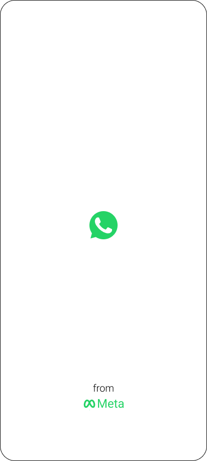
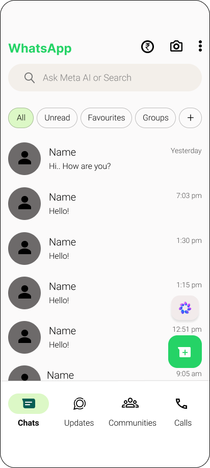
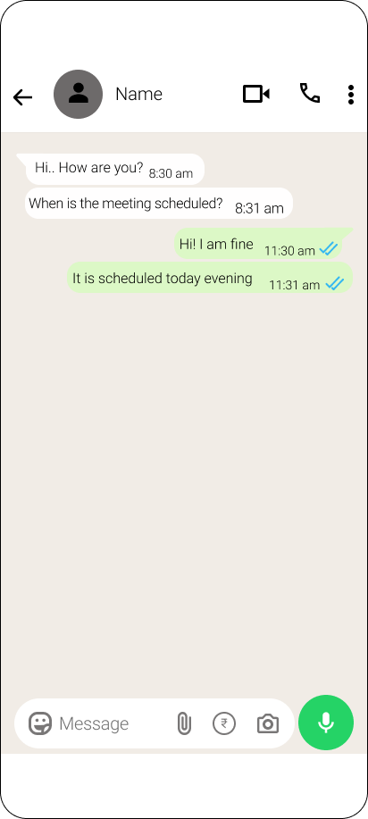
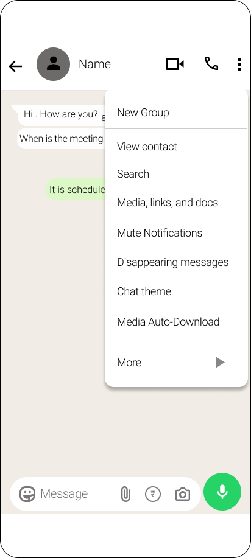
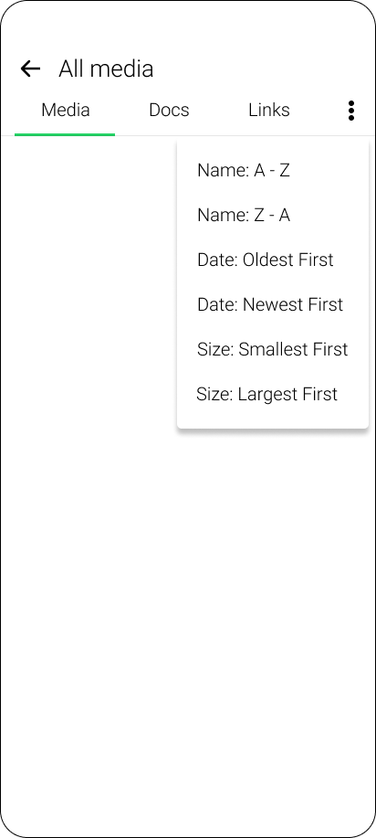

Overview
WhatsApp users share and receive a large amount of media, links, and documents across personal chats, groups, and professional conversations. As conversations grow over time, finding specific content becomes challenging due to limited organization and sorting capabilities.
This project focuses on redesigning the Media, Links & Docs management experience by introducing Smart Content Sorting, allowing users to quickly organize and discover shared content based on different sorting preferences such as name, date, and file size.
The redesigned feature helps users reduce search effort, improve content discoverability, and efficiently manage important files shared within conversations.
Problem Statement
Users often struggle to find specific media, links, and documents shared in WhatsApp conversations due to:
- Large volumes of accumulated media content
- Difficulty locating important files shared months earlier
- No flexible way to organize content based on user preferences
- Time-consuming manual scrolling through galleries and chat history
- Important documents getting buried among frequently shared media
The existing media management experience lacks efficient sorting options, making content discovery slower and frustrating for users.
Research Goal
The goal of this research was to understand how users search, manage, and retrieve shared content in WhatsApp and identify opportunities to improve content organization.
The Challenge
Improving content discovery by helping users quickly organize and find media, links, and documents without manually searching through long conversations.
Analysis
To understand the different ways users interact with shared files, we analyzed usage behaviors across distinct professional and academic personas to define optimal sorting criteria.
| Category | Arjun (Age 21) B.E. Electronics & Communication Student |
Dinesh (Age 28) Junior Software Developer |
Meenakshi (Age 35) Chartered Accountant |
|---|---|---|---|
| Usage Frequency | Daily — study PDFs and project docs | Few times a week — GitHub links, design files | Multiple times daily — financial documents |
| Content Sought | Documents and links from professors | Links — Figma, Jira, deployment URLs, APKs | PDFs, ITR docs, Excel files from clients |
| Findability Challenge | Hard — have to scroll a lot | Links look identical — no preview or label | Nightmare — 30-40 docs per client monthly |
| Missed Files Experience | Yes, missed exam timetable PDF | Yes, lost design link during sprint standup | 4-5 times a week during filing season |
| Sort Criteria Preference | File type, then by sender | Links: sort by domain; Files: sort by type |
Date (monthly view), then sender name |
| Scope Preference | Within specific group chats | Within specific project group chats | Both — per chat and across all chats |
| Impact of Current Experience | Wastes time, feels like basic missing feature | Slows workflow, links shared twice creating noise | Causes missed deadlines, moved clients to email |
| Ideal Screen Expectation | Sort by type, filter by date, pin files | Sort by domain, show page title, filter by extension | Sort by date, filter type, show file size |
Key Insights
Tab-scoped sorting
Media, Docs, and Links each hold their own sort state independently — sorting documents never disturbs the media grid view.
Information architectureThree dimensions, six options
Name, Date, and Size — each with ascending and descending — map cleanly to real use cases: hunting a filename, finding recent shares, freeing storage.
UX decisionInstant, no confirmation
The list reorders the moment a sort option is tapped. No Save button — low-stakes, reversible actions should never ask for confirmation.
UX decisionSession-level preference
Sort persists while the tab is open but resets on exit — treating it as a browsing tool rather than a sticky setting keeps defaults clean.
System logicEmpathy Mapping
"I remember sharing that document last month but scrolling through everything to find it is exhausting — I just want to sort by date and get it done."
01/ SAYS
- Arjun, 21 — B.E. ECE Student
- Daily — study PDFs and project docs
- Sort by type, filter by date, pin files
- Sort-by-type button at the top
- Yes, combined search and sort
02/ THINKS
- Documents and links from professors
- File type first, then by sender
- Within specific group chats
- Search bar not useful without exact name
- Yes, filter by last month would help
03/ FEELS
- Hard — have to scroll a lot
- Yes, missed exam timetable PDF
- Wastes time, feels like basic missing feature
- Very important for academic use
- 2/5 — needs a complete rethink
04/ DOES
- Scrolls manually through Media, Links, Docs daily
- Asks classmates to resend files when can't find them
User Persona
Arjun
27 | Male | Software Engineer | ChennaiBackground
Uses WhatsApp for professional discussions, project updates, and sharing technical documents with colleagues.
Scenario
While preparing project updates, Arjun needs to find an old document shared months ago but struggles to locate it among hundreds of messages.
User Quote
"I often remember receiving a file but spend a lot of time scrolling through chats to find it."
Goals
- Quickly find shared files
- Organize media, links, and documents efficiently
- Save time while searching conversations
Pain Points
- Important documents get buried in chats
- No sorting based on date, size, or file type
- Manual searching takes time
Design Implication
Introduce smart sorting options for media, links, and documents based on date, name, and file size.
Competitor Analysis
To identify product opportunities, this analysis evaluates the content organization features, strengths, and constraints of key messaging competitors in the industry.
| Competitor | Content Organization Features | Strengths | Limitations | Design Opportunity |
|---|---|---|---|---|
| Telegram | Provides separate tabs for Media, Files, Links, Music, and Voice messages with search and filtering options. | Strong content organization and easy access to shared files. | Large number of categories can feel overwhelming. | Provide simple sorting options with clear hierarchy. |
| Google Chat | Organizes shared files and links with integration to Google Drive. | Efficient document management for professional communication. | Less suitable for casual conversations and media-heavy chats. | Design a lightweight sorting experience for everyday users. |
| Microsoft Teams | Provides structured file organization within chats and channels. | Excellent for work-related file management. | More complex compared to personal messaging apps. | Bring professional-level organization into a simple chat experience. |
| WhatsApp (Current) | Provides Media, Links, and Docs tabs inside chat info. | Familiar and easy access to shared content. | No sorting by date, size, file type, or name; users manually scroll. | Introduce Smart Sorting and filtering options for faster discovery. |
Key Opportunity Identified
Current messaging apps provide content grouping, but there is an opportunity to improve discoverability through smart sorting options like date, file type, sender, and size while keeping the experience simple.
Design Solution
Introduced a 'Sort By' action item within the shared Media, Links, and Docs page options menu. This allows users to dynamically sort and reorganize shared files by date, size, or name directly within each respective tab.
Before: Old screen
After: Redesigned Screen
Information architecture
Mapping how the filtering mechanism and tab configurations (Media, Docs, Links) coexist with sorting rules inside the conversation info repository.
User Flow
Visualizing the sequence of clicks to trigger the bottom sort sheet, toggle active preferences, and instantly view the updated results list without step numbers.
High Fidelity UI Design
The high-fidelity mockups show the user journey from launching WhatsApp through to selecting a sort option inside the Media, Links, or Docs tab of a chat. Each screen is designed to integrate seamlessly into WhatsApp's clean interface style, ensuring controls are easy to find and use.





Impact
Improved content discoverability by helping users quickly find media, links, and documents within conversations.
Reduced the time and effort required to search through large chat histories.
Enabled users to organize shared content based on relevant criteria such as date, file type, name, and size.
Created a smoother content management experience for users handling large volumes of shared files.
Learnings
Users need efficient ways to manage growing amounts of digital content without increasing complexity.
Understanding user search patterns helps create meaningful sorting and organization options.
Simple navigation improvements can significantly enhance productivity and reduce user frustration.
Designing for different contexts (students, professionals, and personal users) helps create more inclusive solutions.